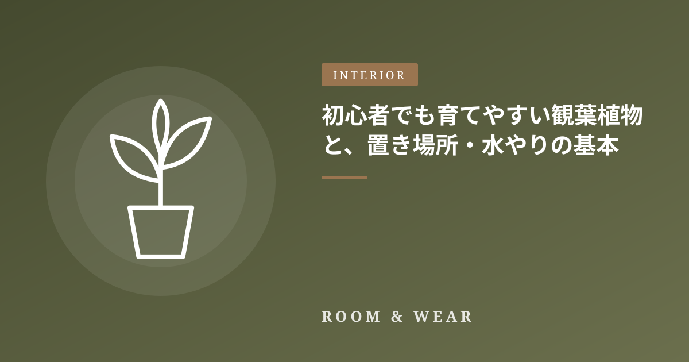

初心者でも育てやすい観葉植物と、置き場所・水やりの基本

※この記事にはアフィリエイトリンクが含まれています（広告について）。
観葉植物を1つ置くだけで、部屋がぐっと落ち着いた雰囲気になります。「すぐ枯らしてしまいそう」と心配な人でも、育てやすい種類と基本のお世話を押さえれば大丈夫です。
初心者向けの育てやすい種類
- ポトス：つるが伸びるタイプ。日陰にも比較的強く、棚の上から垂らしてもおしゃれ
- サンスベリア：乾燥に強く、水やりの頻度が少なくて済む
- パキラ：丈夫で成長が早い。インテリアショップでもよく見かける定番
- モンステラ：切れ込みのある大きな葉が特徴。存在感のある一鉢に
- ガジュマル：ぷっくりした幹がかわいらしく、小さめのサイズから楽しめる
置き場所の基本
多くの観葉植物は、レースカーテン越しの明るい場所を好みます。直射日光は葉焼けの原因になることがあるので注意。エアコンの風が直接当たる場所も、乾燥しやすいので避けましょう。
水やりの基本
「土の表面が乾いたら、鉢の底から流れ出るくらいたっぷり」が基本です。受け皿にたまった水は捨てましょう。冬は成長がゆっくりになるので、水やりの回数を減らします。
鉢やスタンドでおしゃれに
植物が入っているプラスチックの鉢を、そのまま好みのデザインの「鉢カバー」に入れるだけで、インテリアになじみます。床に置く場合は、プランタースタンドで高さを出すと目線に緑が入り、存在感が出ます。
フェイクグリーンという選択肢
日当たりが悪い部屋や、お世話が難しい場合は、フェイクグリーンでも雰囲気は十分楽しめます。
まとめ
まずはポトスやサンスベリアなど丈夫な種類を1鉢、明るい場所に置くところから始めてみてください。
この記事に関連するアイテムを探す
Amazonの検索結果ページに移動します。条件に合う商品を比較してお選びください。
- 観葉植物（ポトスなど）Amazonで商品を探す
- 鉢カバーAmazonで商品を探す
- プランタースタンドAmazonで商品を探す
価格・在庫・仕様は変わることがあります。購入前にAmazonの商品ページで最新の情報をご確認ください。